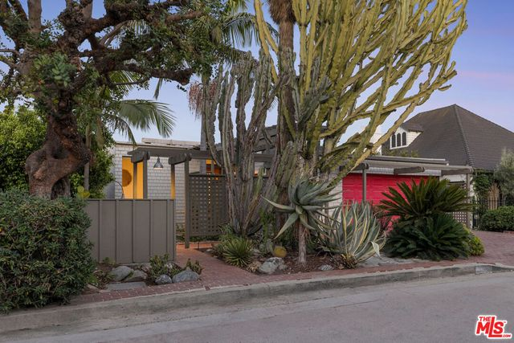
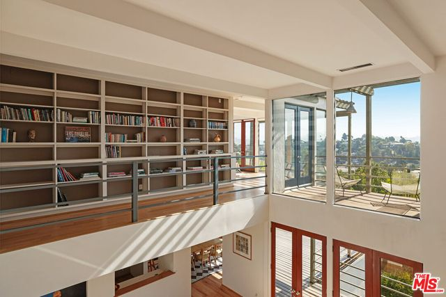
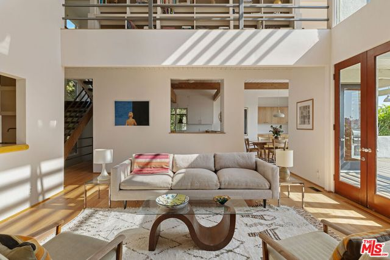
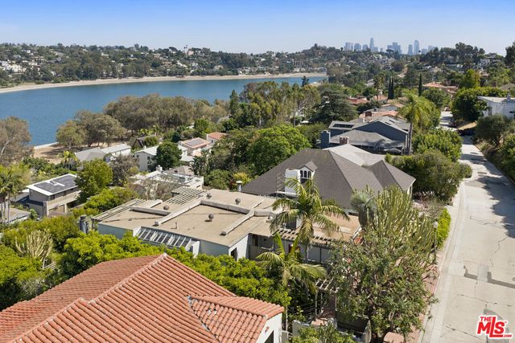

Obsession No. 008Moreno Highlands · Silver Lake
2276
Moreno Dr
The garage door is painted hot pink, and one floor up there's a loft library looking straight out over the Silver Lake Reservoir toward downtown.
Why it made the edit
“This house has it in it to be something special.”
Modern isn't usually the architecture that gets me. I tend to fall for old bones and the kind of character a house only picks up after decades of actually being lived in, so this one in Moreno Highlands, the hillside pocket that wraps the west side of the Silver Lake Reservoir, caught me off guard.
You come up the walk past the cactus and yucca and that hot pink garage door, and inside the whole house just opens, glass walls, soaring ceilings, a loft library up top with a view straight out toward the reservoir and downtown, and there's a lightness to it that feels so specifically Californian.
It's got some real work ahead of it, I won't pretend otherwise, but I think with the right person putting love into it, this house has it in it to be something special.
Three bedrooms, four baths, almost 2,800 square feet, built in 1961, on a street where a view like this doesn't come around twice.
If this one's on your mind, I've got you.



Want to see it in person?
Curious about this one?
Let’s talk.
Listed by Tracy Do & Ronda Doyal, Coldwell Banker Real Estate. House of Zonshine does not represent this listing. Property details are from listing information and public sources and should be independently verified.